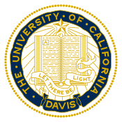

Hello, I'm John Sung
I a student at University of California, Davis.
Currently, I am studying Chemical Engineering and minoring in Computer Science
MORE ABOUT ME
I am from Los Angeles, California. I am a Lakers fan (LABron came to Lakers!) and love Korean food. I like to hang out
with my friends, play guitar, and do outdoor activities.
I started my academic as a Chemical Engineer in UC Davis, but my interest in Computer Science grew as I took classes that required
coding. I am interested in Engineering, Software, and Cybersecurity. Here's my downloadable resume
Resume
Experience
Information Security Office, UC DAVIS
2018- Present
Student Risk Assessor
Davis, CA
Assist in risk assessment for the requested softwares from UC Davis faculty members. Additionally,
worked on designing GRC tool for the risk assessors.
Environmental Health and Science, UC DAVIS
2018 - Present
Student Web Developer
Davis, CA
Assisted in migration process from Wordpress to SiteFarm (UC Davis' Drupal) and designing the website.
Responsible for improving SEO and crossing the bridge between social media and the website.
Energy Conservation Office, UC DAVIS
2017 - 2018
Student Green Building Assistant
Davis, CA
Assisted in certifying a first BREEAM certifcation for UC Davis and an in-use academic building. Also, collected energy, water, and purchasing records to provide
supporting documents for the certification.
Molecular Matrix, Sacramento
2016 - 2017
Manufacturing Engineering Intern
Davis, CA
Designed and proposed various projects to automate manufacturing line 3D Printer and SolidWorks. Additional experience
in helping with manufacturing process and troubleshooting 3D Printer.